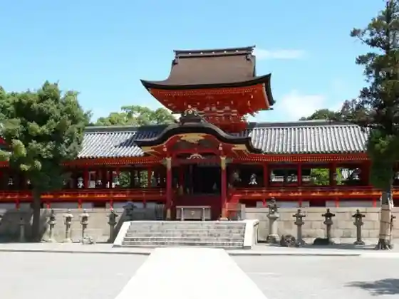
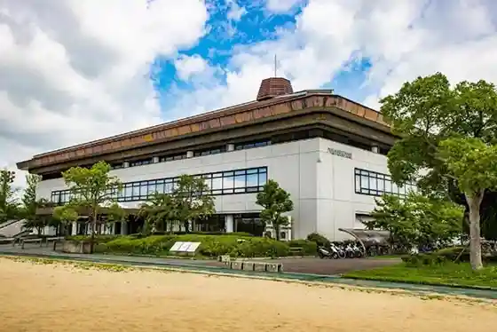
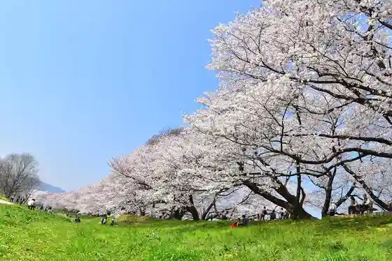

Nagare Hashi (Kamitsu Ya Hashi)
Yawata, Kyoto · 075-983-2853 · Official / source link
Iwashimizu Yawata Miya
Yawata, Kyoto · 075-981-3001 · Official / source link

Hashimoto no Kaori
Yawata, Kyoto · 090-8375-8761 · Official / source link

Yawata Tami Supotsu Park Gym
Yawata, Kyoto · 075-981-6111 · Official / source link

Yodogawa River Park (Se Wari Tsutsumi Chiku)
Yawata, Kyoto · 075-633-5120 · Official / source link

Yawata Hashirii Mochi Shinise
Yawata, Kyoto · 075-981-0154 · Official / source link
Yawata Bunka Center
Yawata, Kyoto · 075-971-2111 · Official / source link
Shokado Garden Art Museum / Kyoto Kitcho Shokado Mise
Yawata, Kyoto · 075-981-0010 · Official / source link
Sakura Kinrin Park
Yawata, Kyoto · 075-981-6644 · Official / source link
Yawata Nagare Hashi Koryu Plaza Shiki Sai Kan
Yawata, Kyoto · 075-983-0129 · Official / source link
Otokoyama Rekurieshon Center
Yawata, Kyoto · 075-983-1611 · Official / source link
Tanden Iori (Rakugaki Tera)
Yawata, Kyoto · 075-981-2307 · Official / source link
Hiko Shrine
Yawata, Kyoto · 075-982-2329 · Official / source link
Shoboji
Yawata, Kyoto · 075-981-0012 · Official / source link
Satsuki Kinrin Park
Yawata, Kyoto · 075-981-9450 · Official / source link
Jibanso
Yawata, Kyoto · 075-981-0064 · Official / source link
Zenpo Ritsu Tera (Autumn Leaves Tera)
Yawata, Kyoto · 075-981-0157 · Official / source link
Ippan Shadanhojin Yawata Tourism Association
Yawata, Kyoto · 075-981-1141 · Official / source link
Enpuku Tera (Daruma Do)
Yawata, Kyoto · 075-981-0142 · Official / source link
O Kashi Tsukasa Kameya Yoshikuni
Yawata, Kyoto · 075-981-3033 · Official / source link
Yasushi Kachi Tera
Yawata, Kyoto · 075-981-0056 · Official / source link
Ota Do Naka Village Tei
Yawata, Kyoto · 075-981-0029 · Official / source link
Isa Ie House
Yawata, Kyoto · Official / source link
Aizuchi Shrine
Yawata, Kyoto · Official / source link
Shokado Fureai City
Yawata, Kyoto · 075-981-1315 · Official / source link